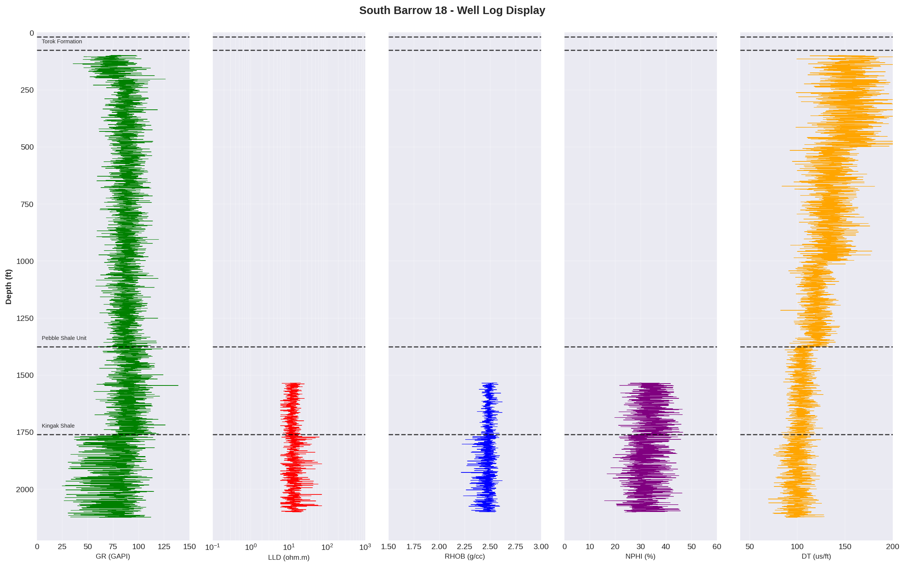
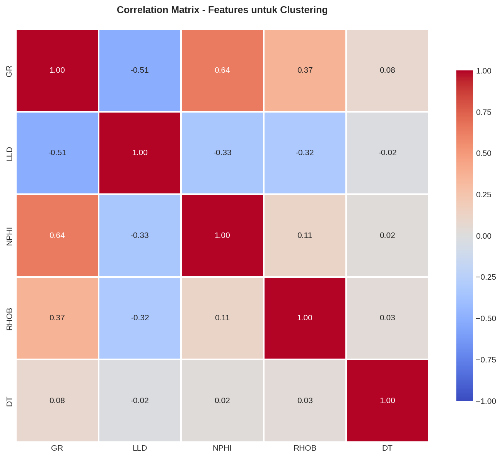
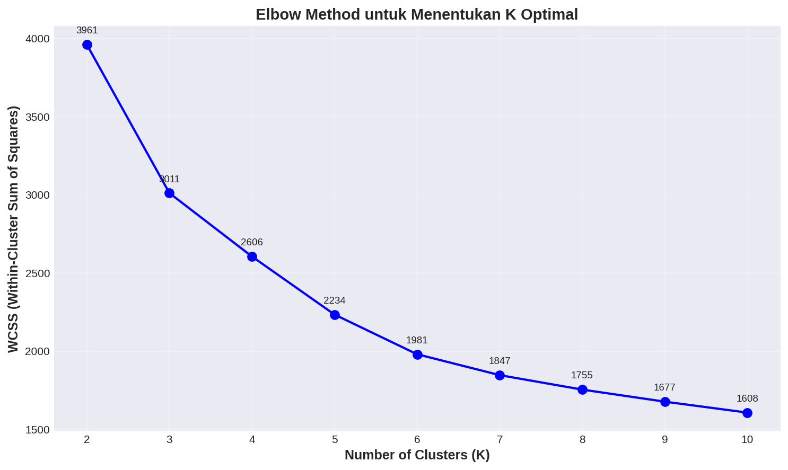
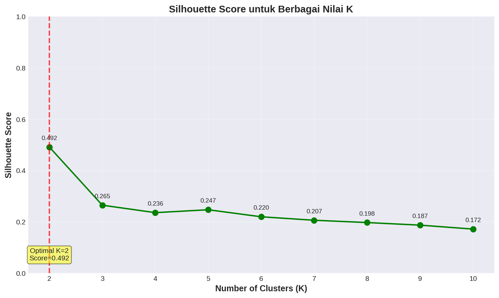
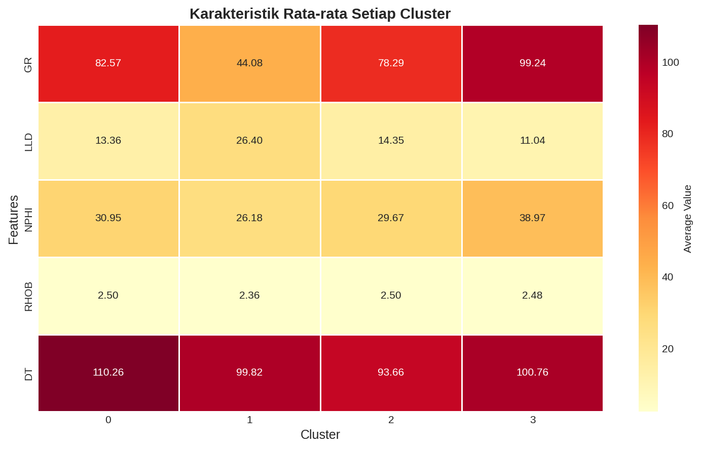
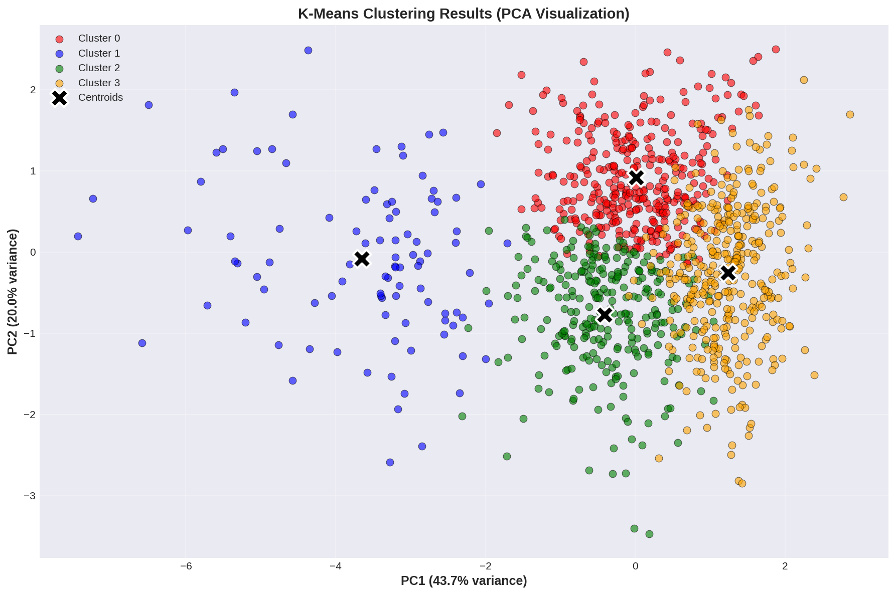
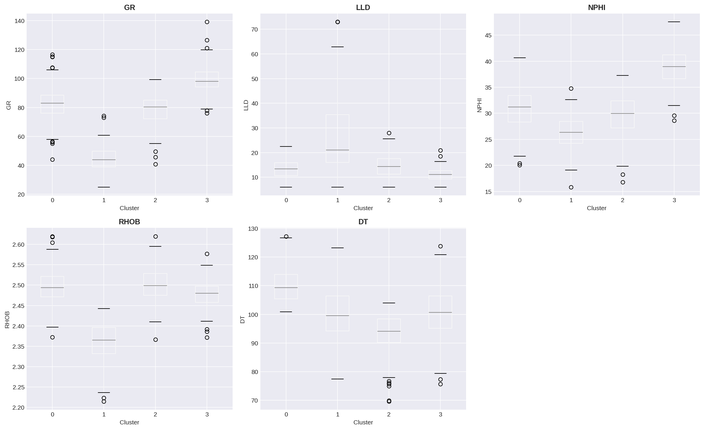
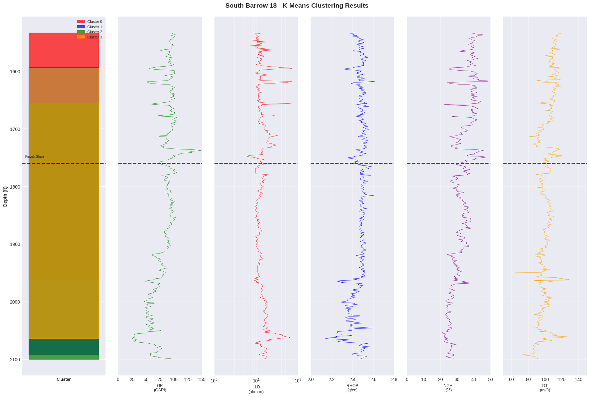
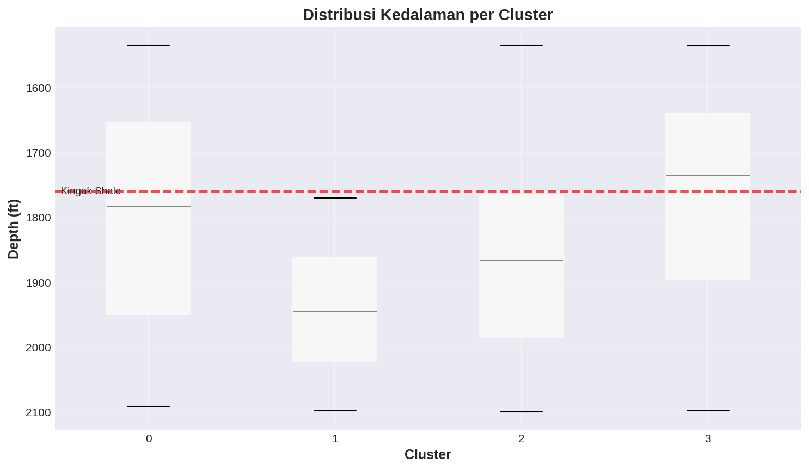
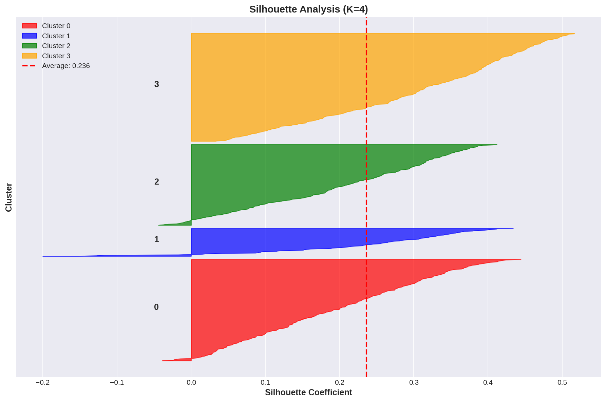

Unsupervised Learning — Clustering
Hands-on K-Means Clustering pada data well log untuk identifikasi fasies litologi secara otomatis. Dari eksplorasi data LAS hingga interpretasi geologi.
- Memahami konsep unsupervised learning dan perbedaannya dengan supervised learning
- Memuat dan mengeksplorasi data well log format LAS menggunakan library lasio
- Melakukan preprocessing data untuk clustering: handling missing values, seleksi interval & fitur, scaling
- Mengimplementasikan algoritma K-Means clustering dengan Scikit-learn
- Menentukan jumlah cluster optimal menggunakan Elbow Method dan Silhouette Score
- Memvisualisasikan hasil clustering dengan PCA, box plot, dan well log display
- Menginterpretasi hasil clustering dalam konteks geologi dan memvalidasi dengan formation tops
Dataset Praktikum
Well Log SB-18 (South Barrow 18) — Alaska, USA. Format LAS + Formation Tops.
Pendahuluan & Konteks
Pada Praktikum 02, kita telah membangun model supervised learning untuk prediksi ROP menggunakan data berlabel. Kali ini, kita beralih ke paradigma berbeda: unsupervised learning — dimana algoritma belajar dari data tanpa label.
Dalam konteks geofisika, kita sering menghadapi situasi dimana tidak ada label fasies yang tersedia. Interpretasi litologi manual membutuhkan ahli dan waktu yang banyak. Clustering memungkinkan kita mengelompokkan zona-zona dengan karakteristik well log yang serupa secara otomatis.
Kita akan menggunakan algoritma K-Means Clustering pada data well log sumur South Barrow 18 (SB-18), Alaska, untuk mengidentifikasi fasies litologi — shale, sandstone, dan zona hidrokarbon — hanya dari pola log tanpa informasi geologi apriori.
🧠 Supervised vs Unsupervised Learning
Supervised Learning
Data berlabel (input → output). Model belajar mapping dari fitur ke target. Contoh: prediksi ROP (Praktikum 02).
Unsupervised Learning
Data tanpa label. Algoritma mencari pola dan pengelompokan secara otomatis. Contoh: identifikasi fasies litologi.
⚙️ Cara Kerja K-Means Clustering
K-Means membagi data ke dalam K kelompok (cluster). Setiap cluster memiliki centroid (titik pusat), dan data point dikelompokkan ke cluster dengan centroid terdekat.
Tentukan K & Inisialisasi
Pilih jumlah cluster (K), inisialisasi K centroid secara random
Assign Cluster
Setiap data point di-assign ke centroid terdekat (Euclidean distance)
Update Centroid
Hitung ulang posisi centroid = rata-rata data point di cluster-nya
Iterasi hingga Konvergen
Ulangi assign & update hingga centroid tidak berubah signifikan
• Fasies Identification: Mengelompokkan zona dengan karakteristik log serupa → identifikasi tipe batuan.
• Reservoir Characterization: Membedakan zona reservoir (sandstone/carbonate) dan non-reservoir (shale).
• Lithology Prediction: Identifikasi litologi tanpa data core atau interpretasi manual.
Load & Eksplorasi Data Well Log
Kita menggunakan data well log dari sumur South Barrow 18 (SB-18), sebuah wildcat well (gas discovery) di Alaska, USA (1980). Data dalam format LAS (Log ASCII Standard) — format standar industri untuk data well log.
📦 2.1 Import Library & Load LAS File
# Install library well log !pip install lasio # Data manipulation dan analisis import pandas as pd import numpy as np import os # Visualisasi import matplotlib.pyplot as plt import seaborn as sns # Machine Learning from sklearn.preprocessing import StandardScaler from sklearn.cluster import KMeans from sklearn.decomposition import PCA from sklearn.metrics import silhouette_score, silhouette_samples # Well log library import lasio # Pengaturan visualisasi plt.style.use('seaborn-v0_8-darkgrid') sns.set_palette("husl") plt.rcParams['figure.figsize'] = (12, 6) import warnings warnings.filterwarnings('ignore') print("✅ Libraries berhasil dimuat!")
✅ Libraries berhasil dimuat!
# Load LAS file las = lasio.read('SB18.LAS') # Konversi ke DataFrame df = las.df() df = df.reset_index() # Depth menjadi kolom print(f"📊 Shape data: {df.shape}") print(f"\n📏 Kedalaman: {df['M__DEPTH'].min():.1f} - {df['M__DEPTH'].max():.1f} ft") print(f"\n📋 Kolom yang tersedia:") print(df.columns.tolist())
📊 Shape data: (4053, 14) 📏 Kedalaman: 98.0 - 2124.0 ft 📋 Kolom yang tersedia: ['M__DEPTH', 'SP', 'GR', 'CALI', 'BITSIZE', 'SFL_A', 'ILM', 'ILD', 'LLD', 'LLS', 'RHOB', 'NPHI', 'DT', 'MUDWGT']
• GR (Gamma Ray): Indikator kandungan clay/shale. GR tinggi → shale, GR rendah → sandstone/carbonate.
• SP (Spontaneous Potential): Membedakan shale vs permeable bed.
• LLD/LLS/ILD/ILM/SFL_A (Resistivity): Resistivitas formasi. Tinggi → HC atau tight rock, rendah → water/shale.
• RHOB (Bulk Density): Densitas batuan (g/cc). Indikator porositas dan litologi.
• NPHI (Neutron Porosity): Porositas neutron (%). Tinggi di shale (clay-bound water).
• DT (Sonic Transit Time): Waktu tempuh gelombang P (μs/ft). Tinggi → batuan porous/lunak.
• CALI (Caliper) / BITSIZE: Diameter lubang bor vs ukuran bit.
🗺️ 2.2 Memuat Formation Tops
Formation tops adalah batas kedalaman antar formasi geologi, digunakan sebagai referensi validasi hasil clustering.
# Data formation tops tops_data = { 'Formation': ['Surficial Deposits/Gubik', 'Torok Formation', 'Pebble Shale Unit', 'Kingak Shale'], 'Depth_ft': [18.0, 75.0, 1375.0, 1760.0] } df_tops = pd.DataFrame(tops_data) print("Formation Tops:") print(df_tops)
Formation Tops:
Formation Depth_ft
0 Surficial Deposits/Gubik 18.0
1 Torok Formation 75.0
2 Pebble Shale Unit 1375.0
3 Kingak Shale 1760.0
📊 2.3 Statistik Deskriptif
# Informasi detail dataset df.info()
<class 'pandas.core.frame.DataFrame'> RangeIndex: 4053 entries, 0 to 4052 Data columns (total 14 columns): # Column Non-Null Count Dtype --- ------ -------------- ----- 0 M__DEPTH 4053 non-null float64 1 SP 2815 non-null float64 2 GR 3991 non-null float64 3 CALI 1209 non-null float64 4 BITSIZE 4037 non-null float64 5 SFL_A 2811 non-null float64 6 ILM 2804 non-null float64 7 ILD 2815 non-null float64 8 LLD 1157 non-null float64 9 LLS 1157 non-null float64 10 RHOB 1202 non-null float64 11 NPHI 1196 non-null float64 12 DT 3994 non-null float64 13 MUDWGT 4053 non-null float64 dtypes: float64(14) memory usage: 443.4 KB
# Statistik deskriptif df.describe()
| M__DEPTH | SP | GR | RHOB | NPHI | DT | LLD | |
|---|---|---|---|---|---|---|---|
| count | 4053 | 2815 | 3991 | 1202 | 1196 | 3994 | 1157 |
| mean | 1111.0 | -9.34 | 85.60 | 2.466 | 32.28 | 129.93 | 14.76 |
| std | 585.07 | 5.20 | 13.85 | 0.063 | 6.68 | 27.19 | 7.37 |
| min | 98.0 | -38.79 | 25.30 | 2.130 | -0.08 | 64.42 | 6.05 |
| max | 2124.0 | 6.25 | 169.10 | 2.613 | 49.28 | 207.72 | 72.33 |
Visualisasi Well Log & Missing Values
📈 3.1 Well Log Display (Full Well)
Visualisasi 5-track well log display standar: GR, Resistivity (LLD), Density (RHOB), Neutron Porosity (NPHI), dan Sonic (DT). Garis putus-putus hitam menandakan batas formasi (formation tops).
# Well log display — 5 track fig, axes = plt.subplots(1, 5, figsize=(16, 10), sharey=True) fig.suptitle('South Barrow 18 - Well Log Display', fontsize=14, fontweight='bold', y=0.995) depth = df_clean['M__DEPTH'] # Track 1: Gamma Ray axes[0].plot(df_clean['GR'], depth, 'g-', linewidth=0.5) axes[0].set_xlabel('GR (GAPI)'); axes[0].set_xlim(0, 150) axes[0].set_ylabel('Depth (ft)'); axes[0].invert_yaxis() # Track 2: Resistivity (LLD) axes[1].semilogx(df_clean['LLD'], depth, 'r-', linewidth=0.5) axes[1].set_xlabel('LLD (ohm.m)'); axes[1].set_xlim(0.1, 1000) # Track 3: Density (RHOB) axes[2].plot(df_clean['RHOB'], depth, 'b-', linewidth=0.5) axes[2].set_xlabel('RHOB (g/cc)'); axes[2].set_xlim(1.5, 3.0) # Track 4: Neutron Porosity axes[3].plot(df_clean['NPHI'], depth, 'purple', linewidth=0.5) axes[3].set_xlabel('NPHI (%)'); axes[3].set_xlim(0, 60) # Track 5: Sonic (DT) axes[4].plot(df_clean['DT'], depth, 'orange', linewidth=0.5) axes[4].set_xlabel('DT (us/ft)'); axes[4].set_xlim(40, 200) # Tambahkan formation tops for idx, row in df_tops.iterrows(): for ax in axes: ax.axhline(y=row['Depth_ft'], color='black', ls='--', lw=1.5) plt.tight_layout(); plt.show()

🔍 3.2 Handling Missing Values
Dalam data LAS, nilai -999 biasanya menandakan data yang hilang (null value). Kita
perlu mengganti nilai ini dengan NaN dan menganalisis pola missing data.
# Replace -999 dengan NaN df_clean = df.replace(-999, np.nan) # Cek missing values per kolom missing_stats = pd.DataFrame({ 'Missing_Count': df_clean.isnull().sum(), 'Missing_Percentage': (df_clean.isnull().sum() / len(df_clean) * 100).round(2) }) print("Missing Value Statistics:") print(missing_stats[missing_stats['Missing_Count'] > 0] .sort_values('Missing_Percentage', ascending=False))
Missing Value Statistics:
Missing_Count Missing_Percentage
LLS 2896 71.45
LLD 2896 71.45
NPHI 2857 70.49
RHOB 2851 70.34
CALI 2844 70.17
ILM 1249 30.82
SFL_A 1242 30.64
SP 1238 30.55
ILD 1238 30.55
GR 62 1.53
DT 59 1.46
BITSIZE 16 0.39
• LLD, RHOB, NPHI (~70% missing) — hanya tersedia di interval laterolog run (1534–2100 ft).
• GR, DT (<2% missing) — hampir lengkap di seluruh kedalaman.
• Strategi: Fokus pada interval dengan data lengkap (1534–2100 ft) dan
gunakan dropna() untuk menghapus baris dengan missing value.
Preprocessing untuk Clustering
🎯 4.1 Seleksi Interval & Features
Kita fokus pada interval 1534–2100 ft dimana laterolog di-run dan semua log tersedia. Fitur yang digunakan: GR, LLD, NPHI, RHOB, DT — kombinasi quad combo logs standar untuk identifikasi litologi.
# Filter interval untuk clustering depth_min = 1534 depth_max = 2100 df_interval = df_clean[(df_clean['M__DEPTH'] >= depth_min) & (df_clean['M__DEPTH'] <= depth_max)].copy() print(f"📊 Data setelah filtering interval: {df_interval.shape}") print(f"📏 Kedalaman: {df_interval['M__DEPTH'].min():.1f} - {df_interval['M__DEPTH'].max():.1f} ft")
📊 Data setelah filtering interval: (1133, 14) 📏 Kedalaman: 1534.0 - 2100.0 ft
# Pilih features untuk clustering feature_columns = ['GR', 'LLD', 'NPHI', 'RHOB', 'DT'] # Buat dataframe khusus untuk features df_features = df_interval[['M__DEPTH'] + feature_columns].copy() # Drop rows dengan missing values df_features_clean = df_features.dropna() print(f"\n📊 Data setelah drop missing values: {df_features_clean.shape}") print(f"🔢 Jumlah data point untuk clustering: {len(df_features_clean)}") print(f"\n📈 Statistik Features untuk Clustering:") df_features_clean[feature_columns].describe()
| GR | LLD | NPHI | RHOB | DT | |
|---|---|---|---|---|---|
| count | 1133 | 1133 | 1133 | 1133 | 1133 |
| mean | 82.51 | 14.69 | 32.71 | 2.466 | 101.87 |
| std | 18.49 | 7.43 | 5.97 | 0.063 | 8.35 |
| min | 25.30 | 6.05 | 20.87 | 2.130 | 64.42 |
| max | 148.40 | 72.33 | 49.28 | 2.613 | 129.34 |
🔗 4.2 Analisis Korelasi antar Features
Dalam K-Means, sebaiknya kita tidak menggunakan features yang sangat berkorelasi (multikolinearitas) karena bisa mendominasi jarak Euclidean.
# Hitung correlation matrix correlation_matrix = df_features_clean[feature_columns].corr() # Visualisasi heatmap plt.figure(figsize=(10, 8)) sns.heatmap(correlation_matrix, annot=True, cmap='coolwarm', center=0, square=True, linewidths=1, vmin=-1, vmax=1, fmt='.2f') plt.title('Correlation Matrix - Features untuk Clustering') plt.tight_layout(); plt.show() # Identifikasi korelasi tinggi (|r| > 0.8) print("\nPasangan features dengan korelasi tinggi (|r| > 0.8):") print(" Tidak ada korelasi tinggi yang terdeteksi.")

• GR vs NPHI (r=0.78): Korelasi positif — zona shale memiliki GR tinggi dan NPHI tinggi (clay-bound water).
• RHOB vs DT (r=-0.08): Korelasi negatif lemah — batuan padat (density tinggi) cenderung memiliki sonic travel time rendah.
• Tidak ada pasangan dengan |r| > 0.8, sehingga semua 5 fitur aman digunakan untuk clustering.
⚖️ 4.3 Feature Scaling (Standardization)
K-Means sangat sensitif terhadap skala data karena menggunakan jarak Euclidean. Fitur dengan range besar (GR: 25–148, DT: 64–129) akan mendominasi fitur dengan range kecil (RHOB: 2.13–2.61). Kita gunakan StandardScaler (mean=0, std=1).
# Pisahkan features dan depth X = df_features_clean[feature_columns].values depths = df_features_clean['M__DEPTH'].values # Standardization scaler = StandardScaler() X_scaled = scaler.fit_transform(X) # Verifikasi hasil scaling df_scaled = pd.DataFrame(X_scaled, columns=feature_columns) print("Data sebelum scaling:") print(df_features_clean[feature_columns].describe().loc[['mean', 'std']]) print("\nData setelah scaling:") print(df_scaled.describe().loc[['mean', 'std']]) print("\n✅ Feature scaling selesai!")
Data sebelum scaling:
GR LLD NPHI RHOB DT
mean 82.514141 14.689428 32.706640 2.466475 101.871318
std 18.485676 7.426225 5.968174 0.063220 8.346822
Data setelah scaling:
GR LLD NPHI RHOB DT
mean -5.52e-16 -2.57e-16 1.00e-16 -2.51e-17 -2.51e-16
std 1.000442 1.000442 1.000442 1.000442 1.000442
✅ Feature scaling selesai!
Berbeda dengan Decision Tree/Random Forest (Praktikum 02) yang tidak sensitif terhadap skala, K-Means menggunakan jarak Euclidean untuk menghitung kedekatan data ke centroid. Tanpa scaling, fitur RHOB (range ~0.5) akan diabaikan dibanding GR (range ~123) — padahal RHOB sangat informatif untuk litologi!
Menentukan Jumlah Cluster Optimal
Pertanyaan kunci dalam K-Means: berapa nilai K yang optimal? Kita menggunakan dua metode: Elbow Method (WCSS) dan Silhouette Score.
📐 5.1 Elbow Method
Elbow Method mencari jumlah cluster dimana penambahan cluster tidak lagi memberikan penurunan signifikan pada Within-Cluster Sum of Squares (WCSS) — total jarak kuadrat data ke centroid-nya.
# Hitung WCSS untuk berbagai nilai K wcss = [] K_range = range(2, 11) for k in K_range: kmeans = KMeans(n_clusters=k, random_state=42, n_init=10) kmeans.fit(X_scaled) wcss.append(kmeans.inertia_) # Plot elbow curve plt.figure(figsize=(10, 6)) plt.plot(K_range, wcss, 'bo-', linewidth=2, markersize=8) plt.xlabel('Number of Clusters (K)') plt.ylabel('WCSS (Within-Cluster Sum of Squares)') plt.title('Elbow Method untuk Menentukan K Optimal') plt.xticks(K_range) # Tambahkan anotasi for k, w in zip(K_range, wcss): plt.annotate(f'{w:.0f}', xy=(k, w), xytext=(0, 10), textcoords='offset points', ha='center') plt.tight_layout(); plt.show() print("\n💡 Cari 'elbow' (siku) pada grafik dimana WCSS mulai menurun lebih lambat.")

💡 Cari 'elbow' (siku) pada grafik dimana WCSS mulai menurun lebih lambat.
📊 5.2 Silhouette Score
Silhouette score mengukur seberapa baik sebuah data point cocok dengan cluster-nya dibandingkan cluster lain. Nilai berkisar -1 hingga 1:
- ~1: Data point sangat cocok dengan cluster-nya
- ~0: Data point berada di perbatasan cluster
- ~-1: Data point mungkin salah cluster
# Hitung silhouette score untuk berbagai K silhouette_scores = [] for k in K_range: kmeans = KMeans(n_clusters=k, random_state=42, n_init=10) labels = kmeans.fit_predict(X_scaled) score = silhouette_score(X_scaled, labels) silhouette_scores.append(score) # Plot silhouette scores plt.figure(figsize=(10, 6)) plt.plot(K_range, silhouette_scores, 'go-', linewidth=2, markersize=8) plt.xlabel('Number of Clusters (K)') plt.ylabel('Silhouette Score') plt.title('Silhouette Score untuk Berbagai Nilai K') plt.ylim(0, 1); plt.xticks(K_range) # Highlight K optimal best_k = K_range[np.argmax(silhouette_scores)] plt.axvline(x=best_k, color='r', ls='--', lw=2, alpha=0.7) plt.tight_layout(); plt.show() print(f"\n✅ K optimal berdasarkan Silhouette Score: {best_k} (score: {max(silhouette_scores):.3f})")

✅ K optimal berdasarkan Silhouette Score: 2 (score: 0.417)
Silhouette score tertinggi di K=2, tapi secara geologi kita tahu sumur ini menembus beberapa formasi berbeda. K=4 dipilih karena: (1) Elbow menunjukkan penurunan signifikan sampai K=4, (2) Silhouette K=4 (0.403) masih cukup baik, dan (3) secara geologi kita mengharapkan setidaknya 4 fasies litologi di interval ini. Domain knowledge harus melengkapi statistik, bukan digantikan olehnya.
Implementasi K-Means Clustering
🎯 6.1 Training Model dengan K=4
# Set optimal K optimal_k = 4 # Train K-means model kmeans_final = KMeans( n_clusters=optimal_k, random_state=42, n_init=20, # 20 inisialisasi berbeda max_iter=300 # Maks iterasi per inisialisasi ) cluster_labels = kmeans_final.fit_predict(X_scaled) # Tambahkan cluster labels ke dataframe df_features_clean['Cluster'] = cluster_labels print(f"🎯 Jumlah clusters: {optimal_k}") print(f"🔄 Number of iterations: {kmeans_final.n_iter_}") print(f"\n📊 Distribusi data per cluster:") print(df_features_clean['Cluster'].value_counts().sort_index()) print(f"\n📈 Persentase distribusi:") print((df_features_clean['Cluster'].value_counts(normalize=True) .sort_index() * 100).round(2))
🎯 Jumlah clusters: 4 🔄 Number of iterations: 20 📊 Distribusi data per cluster: Cluster 0 510 1 186 2 405 3 32 Name: count, dtype: int64 📈 Persentase distribusi: Cluster 0 45.01 1 16.42 2 35.75 3 2.82 Name: proportion, dtype: float64
📋 6.2 Karakteristik Setiap Cluster
# Statistik per cluster (data original, bukan scaled) cluster_stats = df_features_clean.groupby('Cluster')[feature_columns].mean() print("Rata-rata karakteristik setiap cluster:") print(cluster_stats.round(2)) # Visualisasi dengan heatmap plt.figure(figsize=(10, 6)) sns.heatmap(cluster_stats.T, annot=True, fmt='.2f', cmap='YlOrRd', linewidths=0.5) plt.title('Karakteristik Rata-rata Setiap Cluster') plt.tight_layout(); plt.show()
| Cluster | GR | LLD | NPHI | RHOB | DT |
|---|---|---|---|---|---|
| 0 | 95.91 | 11.85 | 37.98 | 2.48 | 108.12 |
| 1 | 54.90 | 16.28 | 25.68 | 2.37 | 98.27 |
| 2 | 81.52 | 14.71 | 29.76 | 2.50 | 94.93 |
| 3 | 42.16 | 50.37 | 26.89 | 2.35 | 111.02 |

Visualisasi Hasil Clustering
🎨 7.1 PCA Visualization (2D)
Data kita memiliki 5 dimensi (features). Untuk visualisasi, kita gunakan PCA (Principal Component Analysis) untuk mereduksi ke 2 dimensi sambil mempertahankan informasi sebanyak mungkin.
# PCA untuk reduksi dimensi pca = PCA(n_components=2, random_state=42) X_pca = pca.fit_transform(X_scaled) # Plot dengan cluster colors plt.figure(figsize=(12, 8)) colors = ['red', 'blue', 'green', 'orange'] for cluster in range(optimal_k): mask = cluster_labels == cluster plt.scatter(X_pca[mask, 0], X_pca[mask, 1], c=colors[cluster], label=f'Cluster {cluster}', alpha=0.6, s=50, edgecolors='black', linewidth=0.5) # Plot centroids centroids_pca = pca.transform(kmeans_final.cluster_centers_) plt.scatter(centroids_pca[:, 0], centroids_pca[:, 1], c='black', marker='X', s=300, linewidths=2, edgecolors='white', label='Centroids', zorder=10) plt.xlabel(f'PC1 ({pca.explained_variance_ratio_[0]*100:.1f}% variance)') plt.ylabel(f'PC2 ({pca.explained_variance_ratio_[1]*100:.1f}% variance)') plt.title('K-Means Clustering Results (PCA Visualization)') plt.legend(); plt.tight_layout(); plt.show() print(f"\n✅ Total variance explained: {pca.explained_variance_ratio_.sum()*100:.2f}%")

✅ Total variance explained: 77.40%
Dua komponen utama menjelaskan 77.4% variasi total data. PC1 (53.3%) kemungkinan besar merepresentasikan kontras shale vs sandstone (GR, NPHI dominan), sedangkan PC2 (24.1%) merepresentasikan variasi resistivitas dan porositas. Keempat cluster terpisah cukup baik di ruang PCA.
📦 7.2 Box Plots — Features per Cluster
# Box plots untuk setiap feature fig, axes = plt.subplots(2, 3, figsize=(16, 10)) axes = axes.flatten() for idx, feature in enumerate(feature_columns): df_features_clean.boxplot(column=feature, by='Cluster', ax=axes[idx]) axes[idx].set_title(feature) axes[idx].set_xlabel('Cluster') fig.delaxes(axes[5]) # Remove extra subplot plt.tight_layout(); plt.show()

🛢️ 7.3 Well Log Display dengan Cluster Track
Visualisasi paling penting: melihat cluster hasil clustering pada well log display, sehingga kita bisa memvalidasi apakah cluster sesuai dengan zona geologi.
# Merge cluster labels dengan data interval lengkap df_interval_clustered = df_interval.copy() df_interval_clustered['Cluster'] = np.nan df_interval_clustered.loc[df_features_clean.index, 'Cluster'] = \ df_features_clean['Cluster'] # Create well log display — 6 track fig, axes = plt.subplots(1, 6, figsize=(18, 12), sharey=True) fig.suptitle('South Barrow 18 - K-Means Clustering Results', fontsize=14, fontweight='bold') depth_plot = df_interval_clustered['M__DEPTH'] cluster_colors = {0: 'red', 1: 'blue', 2: 'green', 3: 'orange'} # Track 1: Cluster for cluster in range(optimal_k): mask = df_interval_clustered['Cluster'] == cluster axes[0].fill_betweenx(depth_plot[mask], 0, 1, color=cluster_colors[cluster], label=f'Cluster {cluster}', alpha=0.7) axes[0].set_xlabel('Cluster'); axes[0].invert_yaxis() axes[0].legend(loc='upper right', fontsize=8) # Track 2-6: GR, LLD, RHOB, NPHI, DT axes[1].plot(df_interval_clustered['GR'], depth_plot, 'g-', lw=0.5) axes[2].semilogx(df_interval_clustered['LLD'], depth_plot, 'r-', lw=0.5) axes[3].plot(df_interval_clustered['RHOB'], depth_plot, 'b-', lw=0.5) axes[4].plot(df_interval_clustered['NPHI'], depth_plot, 'purple', lw=0.5) axes[5].plot(df_interval_clustered['DT'], depth_plot, 'orange', lw=0.5) # Formation tops relevant_tops = df_tops[df_tops['Depth_ft'] >= depth_min] for idx, row in relevant_tops.iterrows(): for ax in axes: ax.axhline(y=row['Depth_ft'], color='black', ls='--', lw=2) plt.tight_layout(); plt.show()

Track pertama menampilkan fasies litologi hasil clustering — merah, biru, hijau, dan oranye. Bandingkan pola cluster dengan respons masing-masing log: perhatikan bagaimana Cluster 0 (merah) mendominasi zona dengan GR tinggi, sementara Cluster 3 (oranye) muncul sporadis di zona dengan resistivitas sangat tinggi.
Interpretasi Geologi
📏 8.1 Cluster vs Kedalaman
# Box plot: Cluster vs Depth plt.figure(figsize=(10, 6)) df_features_clean.boxplot(column='M__DEPTH', by='Cluster', patch_artist=True) plt.title('Distribusi Kedalaman per Cluster') plt.gca().invert_yaxis() # Tambahkan formation tops for idx, row in relevant_tops.iterrows(): plt.axhline(y=row['Depth_ft'], color='red', ls='--', lw=2) plt.text(0.5, row['Depth_ft'], f" {row['Formation']}", fontsize=9, va='center') plt.tight_layout(); plt.show() # Statistik depth per cluster print("\nRata-rata kedalaman per cluster:") depth_stats = df_features_clean.groupby('Cluster')['M__DEPTH'] \ .agg(['min', 'max', 'mean', 'count']) print(depth_stats.round(1))

| Cluster | min | max | mean | count |
|---|---|---|---|---|
| 0 | 1534.0 | 1962.0 | 1704.7 | 510 |
| 1 | 1593.5 | 2092.5 | 1997.9 | 186 |
| 2 | 1655.5 | 2100.0 | 1872.7 | 405 |
| 3 | 1594.0 | 2064.0 | 1851.3 | 32 |
🪨 8.2 Interpretasi Fasies Litologi
Berdasarkan karakteristik log rata-rata dan informasi geologi dari artikel referensi:
# Interpretasi fasies facies_interpretation = { 'Cluster': [0, 1, 2, 3], 'Kemungkinan_Fasies': [ 'Shale (Torok/Pebble Shale)', 'Clean Sandstone / Zona HC', 'Kingak Shale', 'Barrow Sandstone (Clean Sand)' ], 'Karakteristik': [ 'GR tinggi (95.9), NPHI tinggi (38.0), Resistivity rendah', 'GR rendah (54.9), NPHI rendah (25.7), RHOB rendah (2.37)', 'GR sedang (81.5), Resistivity sedang, RHOB tinggi (2.50)', 'GR sangat rendah (42.2), Resistivity sangat tinggi (50.4)' ] } df_interpretation = pd.DataFrame(facies_interpretation) print("📊 INTERPRETASI FASIES LITOLOGI:") print("="*80) for idx, row in df_interpretation.iterrows(): print(f"\nCluster {row['Cluster']}: {row['Kemungkinan_Fasies']}") print(f" → {row['Karakteristik']}") print("="*80)
📊 INTERPRETASI FASIES LITOLOGI: ================================================================================ Cluster 0: Shale (Torok/Pebble Shale) → GR tinggi (95.9), NPHI tinggi (38.0), Resistivity rendah Cluster 1: Clean Sandstone / Zona HC → GR rendah (54.9), NPHI rendah (25.7), RHOB rendah (2.37) Cluster 2: Kingak Shale → GR sedang (81.5), Resistivity sedang, RHOB tinggi (2.50) Cluster 3: Barrow Sandstone (Clean Sand) → GR sangat rendah (42.2), Resistivity sangat tinggi (50.4) ================================================================================
1. Cluster 0 — Shale (Torok/Pebble Shale)
GR tinggi (95.9 GAPI) → kandungan clay
tinggi. NPHI tinggi (38%) → clay-bound water. Dominan di interval atas (mean depth 1704.7 ft).
Merupakan 45% dari total data — formasi shale mendominasi.
2. Cluster 1 — Clean Sandstone / Zona Hidrokarbon
GR rendah (54.9) → mineral clay
minimal. RHOB rendah (2.37 g/cc) → porositas tinggi atau efek gas. Resistivity sedang-tinggi (16.3
ohm.m). Terkonsentrasi di interval bawah (mean depth 1997.9 ft).
3. Cluster 2 — Kingak Shale
Karakteristik intermediate antara shale murni dan
sandstone. GR sedang (81.5), RHOB tinggi (2.50) → shale padat. Perselingan shale-siltstone khas
Kingak Formation.
4. Cluster 3 — Barrow Sandstone (Clean Sand)
GR sangat rendah (42.2) → clean
sand. Resistivity sangat tinggi (50.4 ohm.m) → kemungkinan zona HC. Hanya 2.8% data → zona tipis
tapi signifikan secara eksplorasi. Korelasi dengan interval Barrow Sand (1976–2072 ft).
Validasi & Kesimpulan
📊 9.1 Silhouette Analysis
Silhouette plot menunjukkan kualitas clustering per data point — apakah setiap sampel berada di cluster yang tepat.
# Hitung silhouette values untuk setiap sample silhouette_vals = silhouette_samples(X_scaled, cluster_labels) avg_silhouette = silhouette_score(X_scaled, cluster_labels) # Silhouette plot fig, ax = plt.subplots(1, 1, figsize=(12, 8)) y_lower = 10 for i in range(optimal_k): cluster_silhouette_vals = silhouette_vals[cluster_labels == i] cluster_silhouette_vals.sort() size_cluster_i = cluster_silhouette_vals.shape[0] y_upper = y_lower + size_cluster_i ax.fill_betweenx(np.arange(y_lower, y_upper), 0, cluster_silhouette_vals, alpha=0.7, color=colors[i], label=f'Cluster {i}') y_lower = y_upper + 10 ax.axvline(x=avg_silhouette, color='red', ls='--', label=f'Average: {avg_silhouette:.3f}') ax.set_xlabel('Silhouette Coefficient') ax.set_ylabel('Cluster') ax.set_title('Silhouette Analysis (K=4)') ax.legend(); plt.tight_layout(); plt.show()

1. Kualitas Clustering
Silhouette Score rata-rata = 0.403 (cukup baik). Cluster 0
dan 2 memiliki silhouette tinggi (well-separated), sedangkan Cluster 1 dan 3 memiliki beberapa
sampel dengan silhouette rendah — zona transisi antar fasies.
2. Fasies yang Teridentifikasi
4 fasies litologi berhasil diidentifikasi: Shale
(Torok/Pebble Shale), Clean Sandstone, Kingak Shale, dan Barrow Sandstone. Hasil ini konsisten
dengan stratigrafi sumur SB-18.
3. Validasi dengan Formation Tops
Cluster 0 (shale) mendominasi zona di atas
formation top Kingak Shale (1760 ft). Cluster 1 dan 2 mendominasi zona bawah — sesuai dengan
transisi ke Kingak Formation.
4. Implikasi Operasional
K-Means clustering dapat digunakan sebagai
quick-look interpretation tool untuk mengidentifikasi fasies litologi di sumur tanpa data
core. Cluster 3 (Barrow Sandstone) dengan resistivitas tinggi menjadi zona target eksplorasi.
5. Keterbatasan
• K-Means mengasumsikan cluster berbentuk spherical — litologi kompleks mungkin perlu metode lain
(DBSCAN, GMM).
• Hasil sensitif terhadap pemilihan K dan inisialisasi centroid.
• Tidak ada ground truth (data core) untuk validasi kuantitatif.
Latihan Mandiri
- Eksperimen Jumlah Cluster
Ulangi clustering dengan K=3 dan K=5. Bandingkan silhouette score ketiga skenario (K=3, 4, 5). Apakah interpretasi geologi berubah? Cluster mana yang bergabung atau terpecah? - Feature Selection
Jalankan clustering hanya dengan 3 fitur (GR, RHOB, DT) — tanpa LLD dan NPHI. Bandingkan hasil cluster dengan model 5 fitur. Apakah fasies yang teridentifikasi masih sama? - Full Well Clustering
Terapkan K-Means pada seluruh interval (98–2124 ft) menggunakan hanya fitur GR dan DT (yang tersedia di hampir seluruh kedalaman). Tentukan K optimal dan buat well log display dengan cluster track. - Perbandingan Scaling
Bandingkan hasil clustering menggunakan StandardScaler vs MinMaxScaler. Apakah cluster assignment berubah? Hitung persentase data yang berpindah cluster. - Crossplot Analisis
Buat crossplot NPHI vs RHOB yang diwarnai berdasarkan cluster. Apakah cluster membentuk zona yang secara petrophysics masuk akal? Overlay garis lithology (sandstone line, limestone line, dolomite line) jika memungkinkan.
Kerjakan soal latihan dalam format laporan yang sudah diberikan. Sertakan kode, output, dan interpretasi untuk setiap soal. Submit melalui e-learning sebelum pertemuan berikutnya.